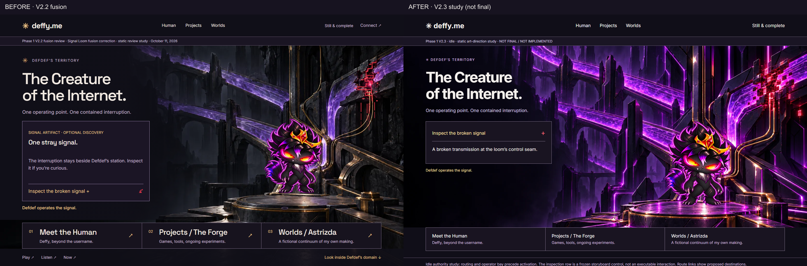
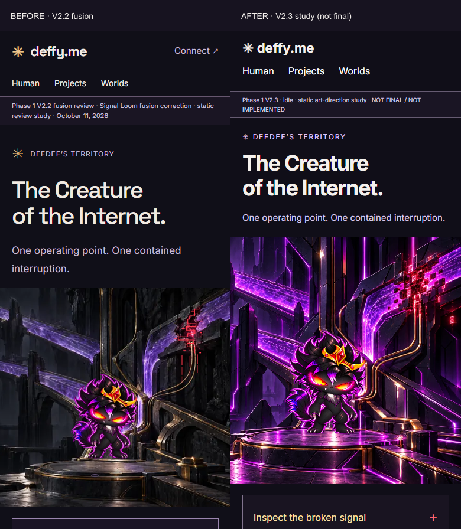
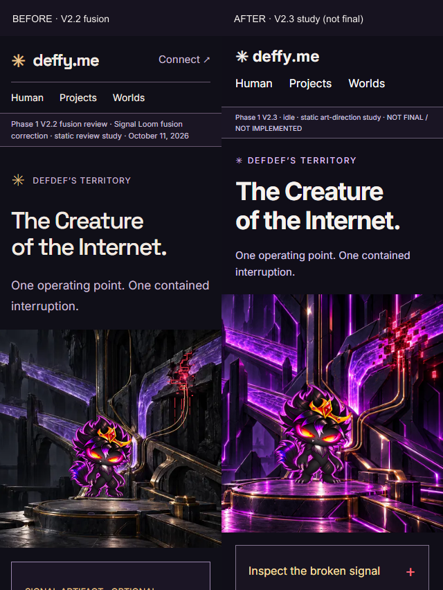
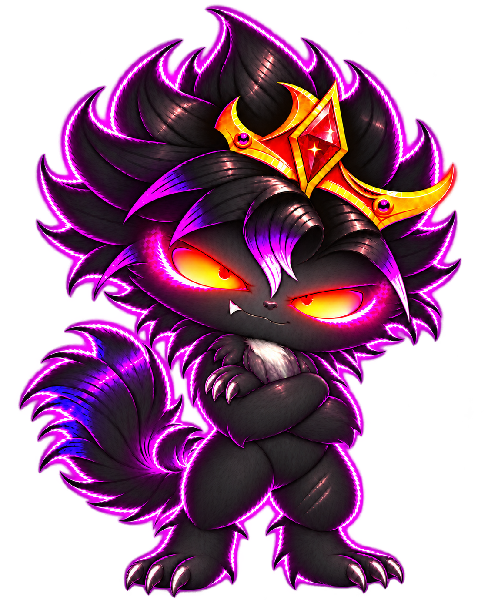
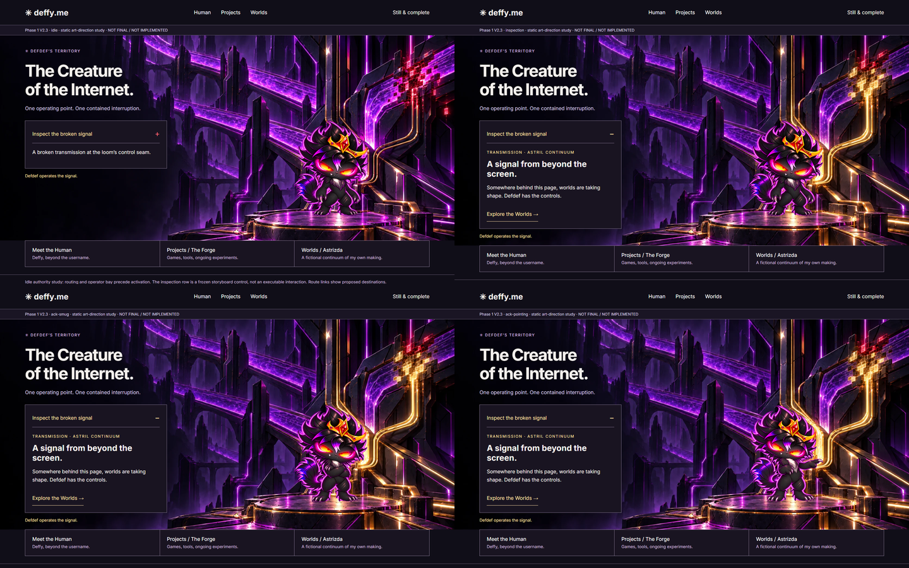
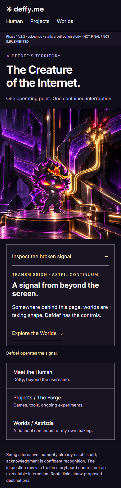
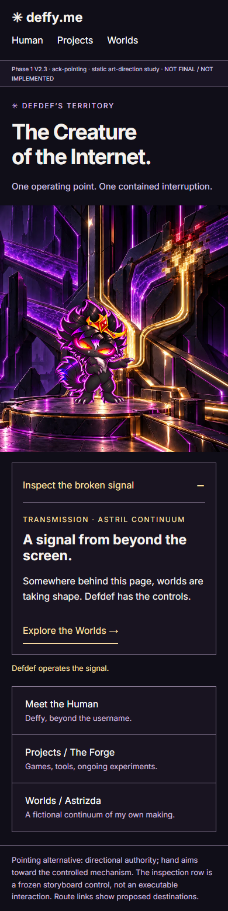

Phase 1 V2.3 · October 11, 2026
Signal Loom — visual coherence and environmental authority
Opus 5.5 handoff evidence. Corrected studies are proposals; production implementation and deployment remain unauthorized.
Read the handoff · Original Loom gallery · Accepted V2.2 comparative gallery



Canon stays intact

Supplied masters copied byte-for-byte. Study display copies trim transparent margins only; uniform scaling preserves crown-to-feet height. Neither acknowledgment alternative is approved for production.



Individual states
Idle · Inspection · Smug · Pointing · Settled
Remaining art decisions: brighter violet hierarchy, residual bridge/floor rendering, and idle input adjacency. Static load/layout checks do not certify runtime interaction, contrast, accessibility, performance or final visual acceptance.